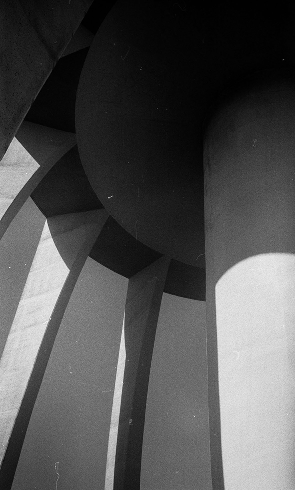

J’ai en un premier temps fait la connaissance de votre agence par votre projet de logements de l’îlot Tam Tam qui m’avait servi comme projet de référence pour mon projet de fin d’études. L’accent dont vont mettez sur le lien historique du site et la manière dont vous trouve une nouvelle forme urbaine selon le règlement, me semble très pertinente. Je vous demande alors brièvement, si vous cherchiez quelqu’un pour rejoindre votre équipe à partir de janvier ?
Venant de Stockholm, je suis d'abord venu à Paris pour travailler chez Sou Fujimoto Paris pendant une période de deux ans. Hormis quelques expositions et concours, j'ai principalement dirigé le travail de l'architecte sur la construction d'un immeuble à Montpellier, l'Arbre blanc. Cet été, j'ai terminé mon diplôme à Malaquais et durant l'automne j'ai fait une intervention courte pour un concours et un projet en APD chez Fuksas Paris.
Dans le lien suivant, vous trouviez mon mémoire de recherche liée à mon projet de fin d’études. Il parle de l’emprise de l'économie et la ‘policy-making’ sur la fabrication de la ville et comment cela se manifeste dans une architecture générique et spécifique, qui potentiellement pourraient ‘jouer’ plus ensemble. Dans un contexte de la densification et du mélange des programmes, de nouvelles formes se créent qui répondra à la situation existante et à la demande de la ville contemporaine.
almquist.henrik@gmail.com : Cv
|